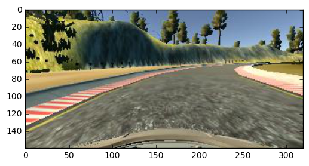

This markdown file documents the details for my Project 3 submission.
Training data is obtained through driving manually several laps with a PS4 joystick:
In total, 34k images (center, left, right camera) were recorded.
To generate more training data without actually driving, below augmentation methods were used:
After augmentation and using both left and right camera images, a total of 52k images were used.
Below are example images:
Original image:
Flipped:

Brightness adjusted:

Left camera:

Right camera:

Every image was resized to 64x64, all the RGB values were normalized to range of [-0.5, 0.5].
To avoid overfitting, all data were split into training/validation using scikit-learn's train_test_split method. test_size was set to 25% of all data.
I used same model from comma.ai here.
This is a model with 3 convolution layers followed by 1 fully connected layer. There's a dropout layer after both the last convolution layer and the fully connected layer. Exponential Linear Units (ELU) was used as activation layer. Adam optimizer was used with mean squared error (mse) as objective.
Below are the dimensions:
The model was trained using batch size 32 and in 10 epochs.
The model performed well on track 1, kept within the drive-able potion of road.
I also tried running the model on track 2, it behaved well there too. The only thing I noticed is since track 2 has slopes, in rare occasions the car may not have enough initial speed to climb a steep uphill. The model kept the car in the right direction though.
The model did not use any other driving data (throttle, whether it's breaking, speed). It would be interesting to explore how we can incorporate these additional features into self driving.